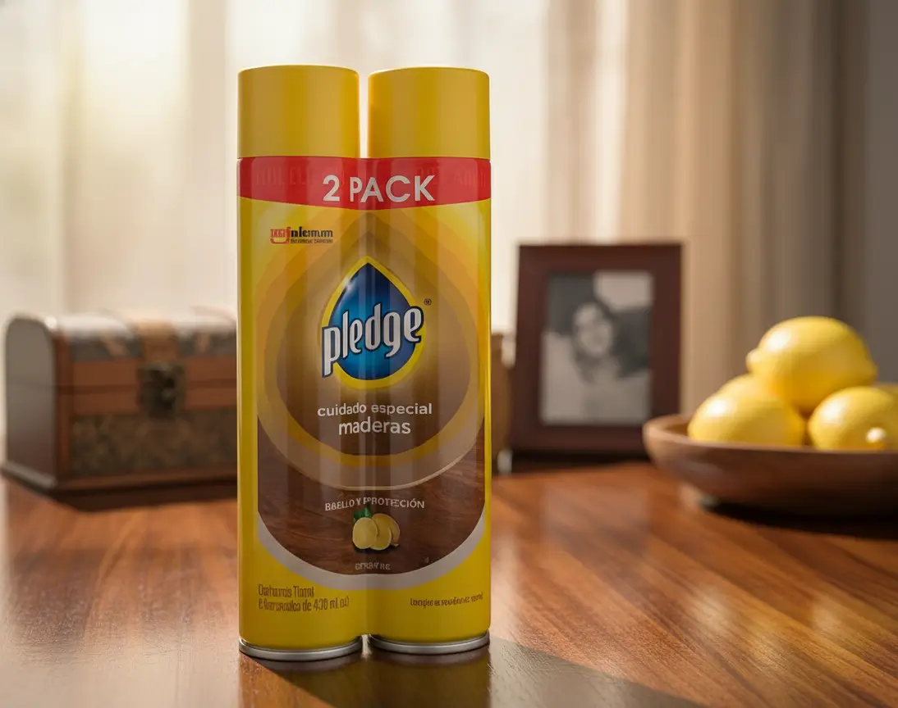

Limpieza
Pack de 2 Limpiadores de Madera Pledge (Aerosol Limón)
Para mantener superficies de madera compatibles con este tipo de producto. La comodidad del aerosol importa menos que acertar con el acabado.
Antes de elegir: Pack de 2 Limpiadores de Madera Pledge (Aerosol Limón)
Revisa etiqueta y superficie autorizada. Haz primero una aplicación discreta y no lo uses en suelos si puede dejarlos resbaladizos.
Precio y disponibilidad en tienda · Abre otra pestaña